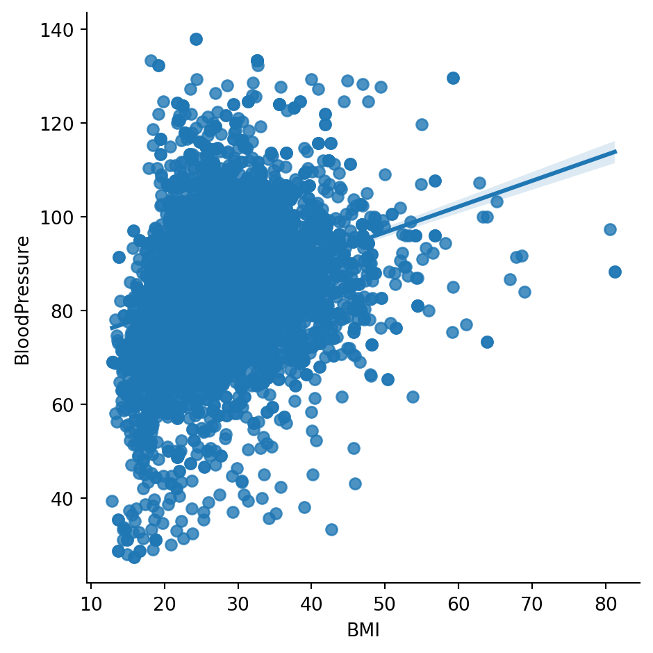
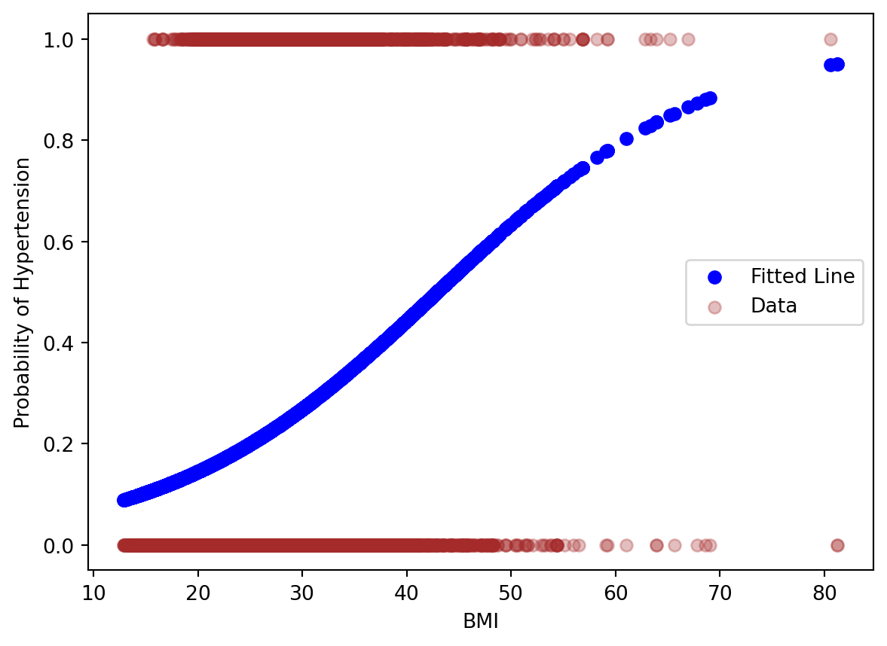
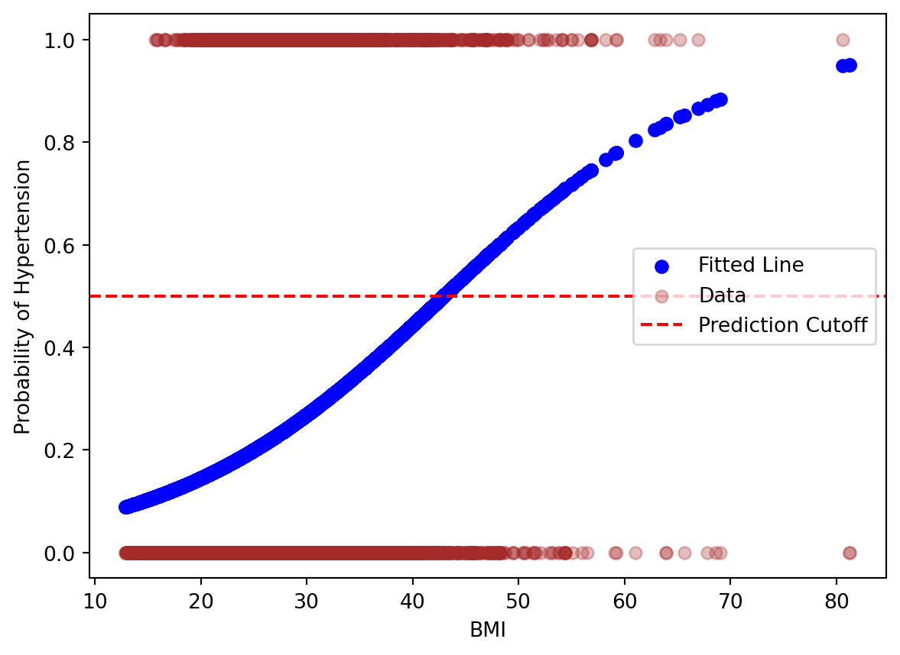
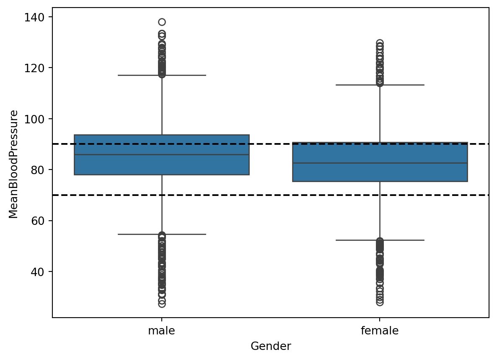

In the first week of class, we will go over what machine learning models are good for, and look at an classification model as an example to show the model development workflow. Then, we will get our hands on the NumPy package to prepare our data for our models for the rest of the course.
Using algebraic expressions, we formulate the following:
\[
Hypertension=f(Age, BMI)
\]
Where \(f(Age, BMI)\) is a machine learning model that takes in the variables \(Age\), \(BMI\), and make a classification on whether someone has \(Hypertension\).
A machine learning model, such as the one described above, has two main uses:
Classification and Prediction: How accurately can we classify or predict the outcome?
Classification: Given a new person’s \(Age, BMI\), classify whether the person has \(Hyptertension\). The outcome is a yes/no classification.
Prediction: Given a person’s \(Age, BMI\), predict the person’s \(BloodPressure\) value. The outcome is a continuous value.
Inference: Which predictors are associated with the response, and how strong is the association?
Classification model example: What is the odds ratio of of \(Age\) on \(Hyptertension\)? If the odds ratio of \(Age\) on \(Hyptertension\) is 2, then an increase of 1 in \(Age\) increases the odds of \(Hyptertension\) by 2.
Prediction model example: Suppose the model is described as \(BloodPressure = f(Age,BMI)=20 + 3 \cdot Age - .2 \cdot BMI\). Each variable has a relationship to the outcome: an increase of \(Age\) by 1 will lead to an increase of \(BloodPressure\) by 3. This measures the strength of association between a variable and the outcome.
Let’s start with the easiest case for just \(Hypertension = f(Age)\), a single predictor.
Before we fit models, we often visualize the data to get a sense whether our setup makes sense.
import pandas as pdimport seaborn as snsimport numpy as npfrom sklearn.model_selection import train_test_splitimport matplotlib.pyplot as pltfrom formulaic import model_matriximport statsmodels.api as smnhanes = pd.read_csv("classroom_data/NHANES.csv")nhanes['Hypertension'] = (nhanes['BPDiaAve'] >80) | (nhanes['BPSysAve'] >130)nhanes['Hypertension2'] = nhanes['Hypertension'].replace({True: "Hypertension", False: "No Hypertension"})plt.clf()ax = sns.boxplot(y="Hypertension2", x="BMI", data=nhanes)ax.set_ylabel('')plt.show()

Okay, great, it looks like when someone’s BMI is higher, then it is more likely that the person has Hypertension.
Now, let’s build the model \(Hypertension = f(BMI)\) to make a prediction of \(Hyptertension\) given \(BMI\).
import pandas as pdimport seaborn as snsimport numpy as npfrom sklearn.model_selection import train_test_splitimport matplotlib.pyplot as pltfrom formulaic import model_matriximport statsmodels.api as smnhanes = pd.read_csv("classroom_data/NHANES.csv")nhanes['Hypertension'] = (nhanes['BPDiaAve'] >80) | (nhanes['BPSysAve'] >130)y, X = model_matrix("Hypertension ~ BMI", nhanes)logit_model = sm.Logit(y, X).fit() plt.clf()plt.scatter(X.BMI, logit_model.predict(), color="blue", label="Fitted Line")plt.scatter(X.BMI, y, alpha=.3, color="brown", label="Data")plt.xlabel('BMI')plt.ylabel('Probability of Hypertension')plt.legend()plt.show()
Optimization terminated successfully.
Current function value: 0.515543
Iterations 6

Instead of boxplots, we plotted the data just using points, with “Hypertension” having a probability of 1 and “No Hypertension” having a probability of 0. We see that we have a fitted line in blue for every value of BMI, which represents our machine learning model \(f(BMI)\). This model is called Logistic Regression.
The first thing we want to investigate about this model is how well it performs in terms of Classification. Just using \(BMI\) as a variable, what is the Accuracy of \(f(BMI)\) classifying whether a person has \(Hypertension\)? Notice that first \(f(BMI)\) gives us continuous probability values, such as given a BMI of 30, there is a 20% chance the person has Hypertension. We need a discrete cutoff of this model to decide whether the person has Hypertension.
A reasonable cutoff to start is 50%: if the probability of having Hypertension is >=50%, then classify that person having Hypertension. Same for < 50%. This is called the Decision Boundary.
plt.clf()plt.scatter(X.BMI, logit_model.predict(), color="blue", label="Fitted Line")plt.scatter(X.BMI, y, alpha=.3, color="brown", label="Data")plt.xlabel('BMI')plt.ylabel('Probability of Hypertension')plt.axhline(y=0.5, color='r', linestyle='--', label='Prediction Cutoff')plt.legend();plt.show()

Given this decision boundary, what is the accuracy?
from sklearn.metrics import (confusion_matrix, accuracy_score)prediction_cut = [1if x >=.5else0for x in logit_model.predict()]print('Accuracy = ', accuracy_score(y, prediction_cut))
Accuracy = 0.762300186838281
Okay, that’s a starting point!
We can break down classification accuracy to four additional results:
cm = confusion_matrix(y, prediction_cut) print("Confusion Matrix : \n", cm)
Confusion Matrix :
[[7235 137]
[2153 109]]
2.1.1 Summary of Exampl;e
So what have we done so far? / Preview of what is to come:
Selected a predictor and binary outcome, and visualized it
Eventually we will look at a continuous outcome, multiple predictors, and how to select multiple predictors
Fit it to a logistic regression model, which is a classification model
Logistic regression is a type of linear model, which is the basis for most machine learning models
We evaluated the model in terms of accuracy, true positive rate, true negative rate, false positive rate, false negative rate
We evaluated the model on the same data that we built the model. Ideally, we want to evaluate the model on data it has never seen before. More on this next week.
Before we race ahead….there’s a lot of new Python data structures that we are working with in this course. So let’s brush up on our data structures and how to make sense of the new ones coming our way!
2.2 Review of Data Structures
We will be seeing a lot of different data structures in this course beyond DataFrames, Series, and Lists. So let’s review how we think about learning new data structures to make our lives easier when we encounter new data structures.
Let’s review the List data structure. For any data structure, we ask the following:
What does it contain (in terms of data)?
What can it do (in terms of functions)?
And if it “makes sense” to us, then it is well-designed.
The list data structure we have been working with is an example of an Object. The definition of an object allows us to ask the questions above: what does it contain, and what can it do? It is an organizational tool for a collection of data and functions that we can relate to, like a physical object. Formally, an object contains the following:
Value that holds the essential data for the object.
Attributes that hold subset or additional data for the object.
Functions called Methods that are for the object and have to take in the variable referenced as an input.
This organizing structure on an object applies to pretty much all Python data types and data structures.
Let’s see how this applies to the List:
Value: the contents of the list, such as [2, 3, 4].
Attributes that store additional values: Not relevant for lists.
A new Data Structure we will work with in this course is NumPy’s ndarray data structure. It is very similar to a Dataframe, but has the following characteristics for building machine learning models:
All elements are homogeneous and numeric.
There are no column or row labels.
Mathematical operations are optimized
So, let’s see some examples:
Value: the 2-dimensional numerical table. It actually can go up to n-dimensions.
Attributes that store additional values:
Methods that can be used on the object:
2.3 Population and Sample
The way we formulate machine learning model is based on some fundamental concepts in inferential statistics. We will refresh this quickly in the context of our problem. Recall the following definitions:
Population: The entire collection of individual units that a researcher is interested to study. For NHANES, this could be the entire US population.
Sample: A smaller collection of individual units that the researcher has selected to study. For NHANES, this could be a random sampling of the US population.
In Machine Learning problems, we often like to take two, non-overlapping samples from the population: the Training Set, and the Test Set. We train our model using the Training Set, which gives us a function \(f()\) that relates the predictors to the outcome. Then, for our main use cases:
Prediction: We use the trained model to predict the outcome using predictors from the Test Set and compare to the true value in the Test Set.
Inference: We examine the function \(f()\)’s trained values, which are called parameters. For instance, \(f(Age,BMI,Income)=20 + 3 \cdot Age - .2 \cdot BMI + .00015 \cdot Income\), the values \(20\), \(3\), \(-.2\), and \(.00015\) are the parameters. Because these parameters are derived from the Training Set, they are an estimated quantity from a sample, similar to other summary statistics like the mean of a sample. Therefore, to say anything about the true population, we have to use statistical tools such as p-values and confidence intervals.
If the concepts of population, sample, estimation, p-value, and confidence interval is new to you, we recommend do a bit of reading here [todo].
2.4 How to evaluate and pick a model?
The little example model we showcased above is an example of a linear model, but we will look at several types of models in this course. In order to decide how to evaluate and pick a model, we will need to develop a framework to assess a model. Let’s start with the use case of prediction.
2.4.1 Prediction
Suppose we try to use the single variable \(BMI\) to predict \(BloodPressure\) using a linear model.
import pandas as pdimport seaborn as snsimport numpy as npfrom sklearn.model_selection import train_test_splitimport matplotlib.pyplot as pltfrom formulaic import model_matriximport statsmodels.api as smnhanes = pd.read_csv("classroom_data/NHANES.csv")nhanes['BloodPressure'] = nhanes['BPDiaAve'] + (nhanes['BPSysAve'] - nhanes['BPDiaAve']) /3y, X = model_matrix("BloodPressure ~ BMI", nhanes)X_train, X_test, y_train, y_test = train_test_split(X, y, test_size=0.5, random_state=42)model = sm.OLS(y_train, X_train)results = model.fit()results.summary()plt.plot(X_train.BMI, results.fittedvalues, label="fitted line")plt.scatter(X_train.BMI, y_train, alpha=.3, color="brown", label="training set")plt.legend();

We examine how well our model performs in terms of prediction by seeing how close our model’s predicted \(BloodPressure\) is to the Training Set’s true \(BloodPressure\): the Training Error. We also take the model to the Testing Set to predict \(BloodPressure\) using predictors from the Test Set and compare to the true \(BloodPressure\) in the Test Set: the Testing Error. We want the model’s Training Error to be adequately small on the Training Set, but what we really care about is the Testing Error, because it is a true test of how the model performs on unseen, new data, and allows us to see how generalizeable the model is.
We see that the Training Error is fairly high, and the Testing Error is even higher. This is an example of Underfitting, where our model failed to capture the complexity of the data in both the Training and Testing Set.
Let’s return to the drawing board and fit a new type of model that has more flexibility around complicated patterns of data. Let’s see how it does on the Training Set:
We see that the Training Error is low, but the Testing Error is huge! This is an example of Overfitting, in which our model fitted the shape of of the training set so well that it fails to generalize to the testing set.
We want to find a model that is “just right” that doesn’t underfit or overfit the data. Usually, as the model becomes more flexible, the Training Error keeps lowering, and the Testing Error will lower a bit before increasing. See below:
Source: An Introduction to Statistical Learning, Ch. 2, by Gareth James, Daniela Witten, Trevor Hastie, Roebert Tibshirani, Jonathan Taylor.
Let’s consider how we would evaluate and choose models for Inference.
For models with low number of predictors, there are some plots and metrics one would consider, such as BIC.
For models with high number of predictors, we will talk about it in more detail in weeks 5 & 6.
Besides how flexible a model is, another categorization of machine models is how interpretable they are. The more interpretable a model is, the better one can describe how each variable has an predictor of the model. That makes the inference process easier.
Below are some example models mapped to these two dichotomies. The linear model lies very similar as the “Least Squares” models.
Source: An Introduction to Statistical Learning, Ch. 2, by Gareth James, Daniela Witten, Trevor Hastie, Roebert Tibshirani, Jonathan Taylor
2.5 The NumPy Package
2.5.1 Subsetting
2.5.2 How to split the data for training and testing